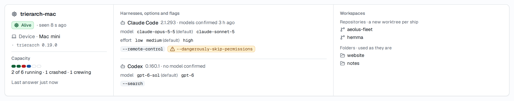
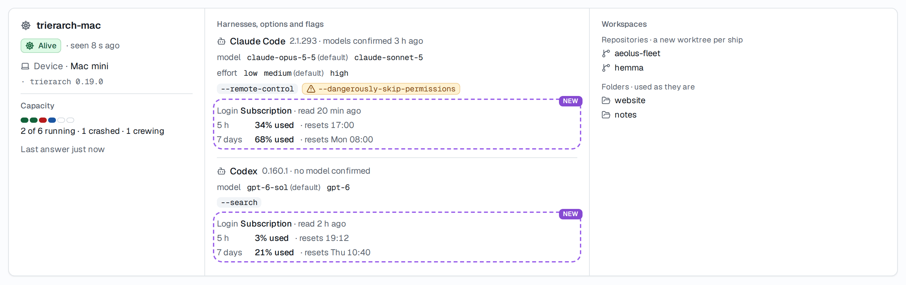
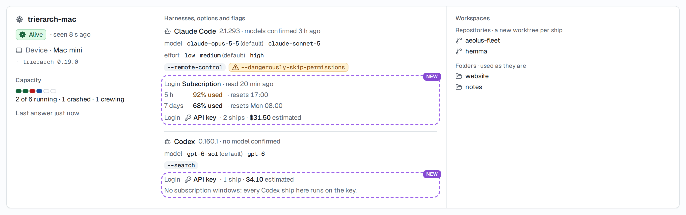
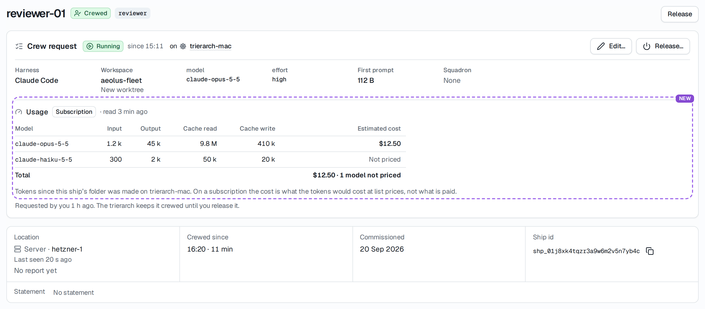
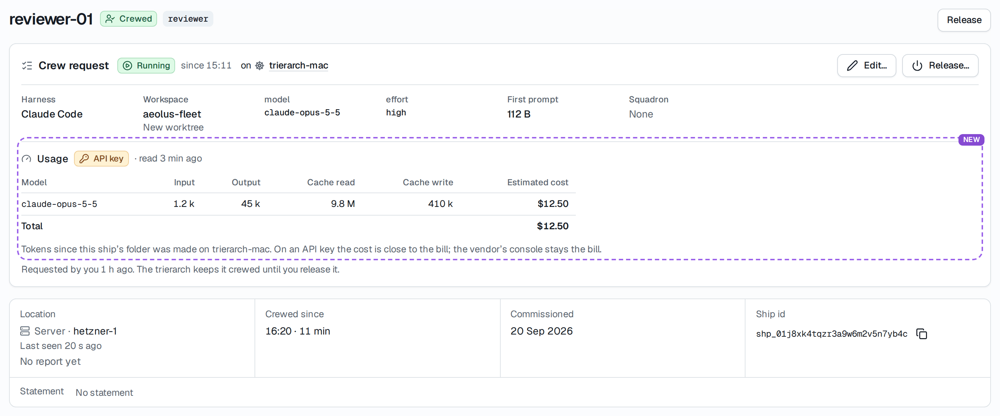
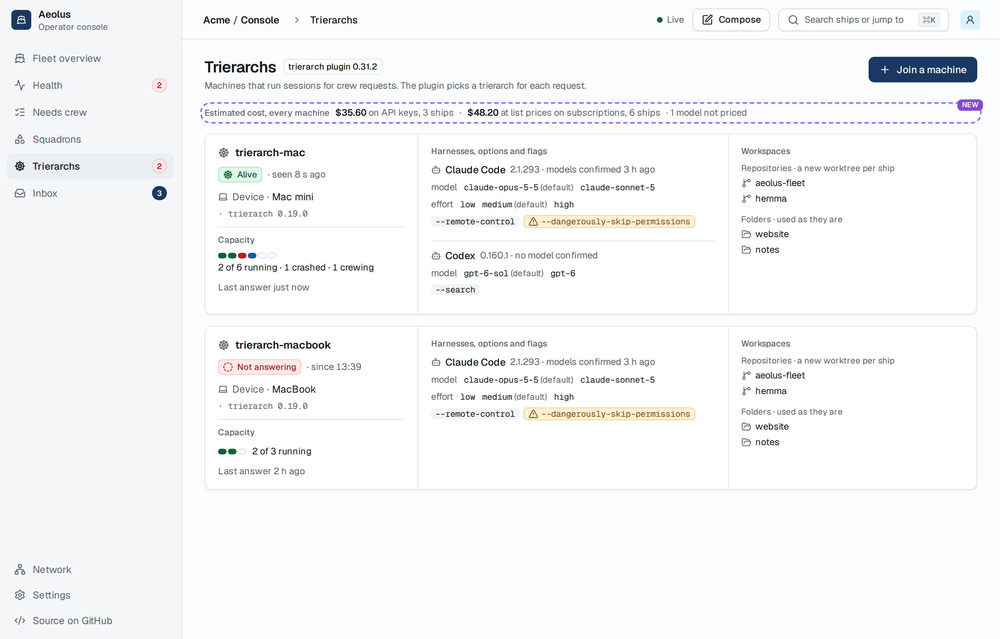

Usage and cost in the console
Screen gate for 0.33.0: nothing is built until Thomas approves. Every "Before" is a screenshot of the console as it is today (Storybook, the real components and fixtures). Every "After" is the same component with only the new part added, outlined in purple and tagged New.
The data exists already: each trierarch report carries usage (packages/common/src/trierarch/report-details.ts, harnessUsageSchema). Per harness, the subscription windows with usedPercent and resetsAt; per ship, the tokens per model and estimatedCostUsd. No console screen shows it today; only the raw JSON under Report details on the trierarch's own ship page. The login a ship runs on (subscription or API key) comes with trierarch draft PR #35 and is drawn here as far as that design goes.
1. Trierarchs: the machine card
What is new: under each harness, its login and its subscription windows, as numbers. One line per window: its length, how much is used, when it starts again, and when the trierarch read it. No bar, so it reads the way Capacity reads: the number first.
Before

After, both harnesses on the subscription

windowMinutes: 300 reads "5 h", 10080 reads "7 days". The reset reads as a clock time today, a weekday and time later.After, with API keys (depends on trierarch PR #35)

2. The ship page: tokens and cost per model
What is new: a Usage part inside the Crew request card, under the settings, because the trierarch that crews the ship is the one that reads it. It names the login as a badge, then one row per model with the four token counts and the estimated cost, and a total. A model the price table does not price says "Not priced" and is left out of the total, which says so. A ship without a trierarch (crewed by hand, or no crew request) shows no Usage part: nothing reads its tokens.
Before

After, on the subscription

After, on an API key (depends on trierarch PR #35)

usage, and PR #35 lesson #353).3. A fleet-wide total
Where it fits: the Trierarchs page, one line between the page description and the machine cards. It adds up every machine's ships, keeping the key and the subscription apart, since one is close to money spent and the other is not. The ship count beside each says how many ships it covers.
Before

After

Where it does not fit: the Fleet overview metrics (Ships crewed, Awaiting crew, Stuck). Those count what needs the operator now and each opens what it counts; a cost estimate is neither, and it exists only with the trierarch plugin. So no total goes there.
Not changed
- The machine's own page (Trierarchs, one machine) keeps its sections; Report details there still show the raw JSON.
- No new page, no chart, no history: the report holds only the latest reading, so there is nothing to plot over time.
Questions for Thomas
- The fleet total: on the Trierarchs page, or nowhere for now?
Pick: on the Trierarchs page, as drawn. It answers "what do my ships cost" without opening each ship, and keeps the overview about what needs you. - A window nearly used up: a tone or not? Drawn: 90 % or more in the waiting tone, the number unchanged. Running out itself is #1284 and #1286, not this screen.
Pick: the waiting tone at 90 %, no notice or alert from this design. - The login per ship is not in the report yet.
harnessUsageSchemahas no login field; PR #35 Q4 pick 2 adds it per ship. Until it lands, the card and the ship show only the subscription windows, and the API key parts wait.
Pick: build the subscription parts in 0.33.0 now; the API key parts once #35 is agreed and the report carries the login. - "Since its folder was made" as the period. The trierarch counts a ship's tokens since its folder was made on that machine, so a ship moved to another machine starts again from zero there. The note says so.
Pick: say it as drawn; a per-day or per-week view needs history the report does not keep. - Token counts rounded as "1.2 k", "9.8 M", the exact number in a tooltip.
Pick: rounded, as drawn.